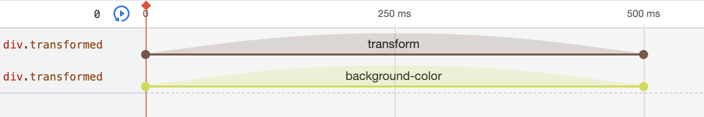
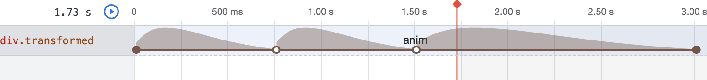

Workshop: Begrüssungsszenen animieren
Eine Begrüssung ist nie einseitig. Jemand grüsst, jemand grüsst zurück, oder eben nicht. Oder es folgt eine Botschaft auf die Begrüssung. Heute entwickelt ihr eine kleine animierte Szene.
Teil 1: Die Begrüssung als Szene
Eine Begrüssung ist mehr als ein Wort. Sie ist eine kleine Szene: Die Seite grüsst, die Person, die sie öffnet, reagiert, und die Seite antwortet darauf. Und vielleicht sagt die Begrüssung mehr als nur «Hallo», Songtexte sind kleine Geschichten, auf das Hallo folgt etwas.
Erst mit dem zweiten Satz entsteht ein Gegenüber mit einer Stimmung. Und die Stimmung gibt der Bewegung einen Grund: Ein müdes «Hallo» kommt langsam, sackt ab und braucht eine Pause, bevor der nächste Satz kommt.
Zwei Sätze sind das Rohmaterial für die Szene, die ihr später baut. Zuerst braucht ihr aber das Werkzeug, um Wörter in Bewegung zu bringen.
Teil 2: Was sind CSS-Animationen?
Transitions und Transforms kennt ihr schon. Eine Transition kennt nur Zustand A und Zustand B. Bei einer Animation könnt ihr beliebig viele Zustände dazwischen festlegen, sogenannte Keyframes.
| Transition | Animation | |
|---|---|---|
| Zustände | Zwei: vorher und nachher | Beliebig viele Keyframes |
| Auslöser | Eine Zustandsänderung, z. B. :hover |
Läuft von selbst, sobald die Seite lädt |
| Wiederholung | Nein | Beliebig oft, auch endlos |
Animationen sichtbar machen
In den Developer Tools von Chrome könnt ihr euch im Tab Animations den Verlauf einer Animation anzeigen lassen. Zu finden ist er über die drei Punkte → More tools → Animations. Eine Transition geht von Zustand A zu Zustand B:

Eine Animation mit Keyframes bei 0 %, 25 % und 50 % sieht dagegen so aus:

Teil 3: Die Syntax
Eine Animation besteht aus zwei Teilen: Zuerst wird sie mit @keyframes entworfen, dann wird sie
einem Element zugewiesen.
/* 1. Animation entwerfen */
@keyframes hereinschieben {
from {
transform: translateX(0%);
}
to {
transform: translateX(100%);
}
}
/* 2. Animation zuweisen */
.wort {
animation-name: hereinschieben;
animation-duration: 3s;
}- Den Namen nach
@keyframeswählt ihr frei. Mit diesem Namen wird die Animation zugewiesen. fromist der Keyframe bei 0 %,toder bei 100 %.- Anders als bei
transitionmüsst ihr nicht angeben, welche Eigenschaften animiert werden. Alles, was in den Keyframes steht, wird animiert.
Mehr als zwei Zustände: Prozente
@keyframes winken {
0% { transform: rotate(0deg); color: black; }
25% { transform: rotate(-15deg); }
50% { transform: rotate(15deg); color: red; }
75% { transform: rotate(-10deg); }
100% { transform: rotate(0deg); color: black; }
}
/* Keyframes mit gleichem Zustand lassen sich zusammenfassen */
@keyframes pulsieren {
0%, 100% { opacity: 1; }
50% { opacity: 0.2; }
}Teil 4: Die Animation steuern
| Eigenschaft | Was sie macht | Beispiel |
|---|---|---|
animation-duration |
Dauer eines Durchgangs | 3s, 800ms |
animation-delay |
Wartezeit vor dem Start | 1s |
animation-iteration-count |
Wie oft die Animation abgespielt wird, Standard ist 1 | 3, infinite (endlos) |
animation-direction |
normal vorwärts, reverse rückwärts, alternate hin und her,
alternate-reverse her und hin |
alternate |
animation-timing-function |
Beschleunigung, wie transition-timing-function |
ease-in-out, linear, steps(5) |
animation-fill-mode |
forwards behält den letzten Keyframe nach dem Ende, backwards zeigt den ersten
schon während der Verzögerung, both beides |
both |
animation-play-state |
Läuft oder ist angehalten. Angehalten und wieder gestartet, läuft sie dort weiter, wo sie stand. | running, paused |
Kurzform: animation
/* duration | timing-function | delay | iteration-count | direction | fill-mode | play-state | name */
animation: 3s ease-in 1s 2 reverse both paused hereinschieben;
/* meistens reicht viel weniger */
animation: hereinschieben 3s ease-in-out both;Teil 5: Buchstabe für Buchstabe
Typografische Animationen werden spannend, wenn sich nicht das ganze Wort bewegt, sondern jeder Buchstabe einzeln, leicht versetzt.
<h1 class="wort" aria-label="Hallo">
<span style="--i: 0">H</span>
<span style="--i: 1">a</span>
<span style="--i: 2">l</span>
<span style="--i: 3">l</span>
<span style="--i: 4">o</span>
</h1>.wort span {
display: inline-block; /* wichtig! */
animation: huepfen 1.2s ease-in-out infinite alternate;
animation-delay: calc(var(--i) * 0.12s);
}
@keyframes huepfen {
0% { transform: translateY(0) rotate(0deg); }
60% { transform: translateY(-24px) rotate(-6deg); }
100% { transform: translateY(0) rotate(4deg); }
}- Mit
aria-labelliest ein Screenreader «Hallo» vor statt «H, a, l, l, o». Die einzelnen Buchstaben sind darum mitaria-hiddenausgeblendet. - Die Variable
--iist die Nummer des Buchstabens.calc(var(--i) * 0.12s)rechnet daraus für jeden Buchstaben eine eigene Verzögerung aus: 0s, 0.12s, 0.24s … - Ein
spanist ein Inline-Element, und darauf wirkttransformnicht. Darum braucht esdisplay: inline-block.
Teil 6: Animation und Interaktion
Eine Animation läuft von selbst. Spannend wird es, wenn eine Szene entsteht. Wie wird die Interaktion eingebunden? Wie die Zeit? Ihre Antwort besteht nicht aus Worten, sondern aus Bewegungen der Maus. Mit CSS allein habt ihr dafür diesen Werkzeugkasten:
| Verhalten in der Begegnung | Im Browser | CSS |
|---|---|---|
| sich nähern, Interesse zeigen | Maus fährt über ein Element | :hover |
| verweilen, länger hinschauen | Maus bleibt liegen | transition-delay, langsame Transition |
| berühren | Maustaste gedrückt halten | :active |
| antworten, sich einlassen | anklicken, der Zustand bleibt bis zum nächsten Klick daneben | :focus mit tabindex="0" |
| sich abwenden | Maus verlässt das Element | Transition zurück in den Grundzustand |
| ignorieren, nichts tun | keine Interaktion | animation-iteration-count, animation-fill-mode: Die Begrüssung gibt irgendwann
auf |
vw ist ein Hundertstel der Fensterbreite,
vh ein Hundertstel der Fensterhöhe. Damit skaliert die Schrift mit dem Bildschirm. Testet in
einem breiten und einem schmalen Fenster, und auf dem Handy.Aufgabe auf 6. November, 18:00: Eine Mini-Begrüssungsszene
Setzt eure Szene um: eine typografische Begrüssung, die den ganzen Bildschirm bespielt und mit der Person rechnet, die die Seite öffnet.
Macht drei Varianten, testet darin das Timing derselben Animation und der Elemente.
Anforderungen
- Ein Begrüssungswort in einer Sprache eurer Wahl, gefolgt von etwas mehr: einem zweiten Satz, einer Stimmung, einer Antwort.
- Mindestens eine eigene
@keyframes-Animation mit mehr als zwei Keyframes. - Reduziert die Mittel: Welche Gestaltungselemente braucht es wirklich?
- Überprüft die Schriftwahl: Welche Schrift passt zur Bewegung?
Ausblick
Am 7.11. schauen wir ein bisschen JavaScript an, dann werden wir die Szene noch interaktiver machen.